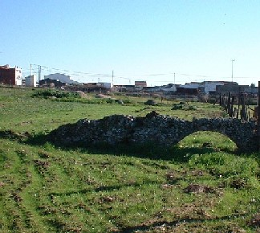

|
ESPARRAGALEJO |
|
Esparragalejo se localiza en las proximidades de Mérida.
Se han hallado vestigios de la Edad de Bronce, pero es en el año 194 a.e.c.,
cuando llegan los romanos y crean un campamento militar permanente. Su finalidad
era defender los pasos del
Guadiana por su orilla derecha y la calzada. Para abastecer de agua al campamento militar, los romanos construyeron un pantano. Con grandes bloques graníticos construyeron un dique y cortaron la corriente del arroyo de La Albuera. La presa tiene trece contrafuertes, unidos entre sí por arcos, formando una figura de puente tumbado. En el año 1940 fue reparado, desde entonces la presa original "La Muralla Chica", es visible cuando el nivel de las aguas no se halla en su punto máximo. |
 |
|
Para llevar el agua al campamento se construyó un acueducto, del que se conserva algún resto. |